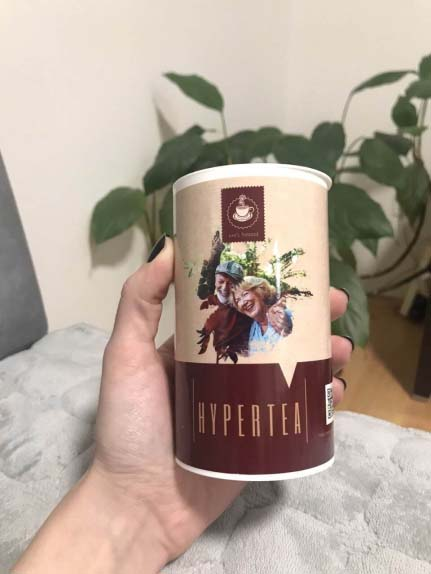

«Каждый третий житель страны старше 45 лет умрет от гипертонии в ближайшие 10 лет, если не начнет грамотное лечение». Ведущий кардиолог страны рассказал, как взаимосвязан остеохондроз и гипертония, и как БЕЗ ХИМИИ продлить жизнь на 12-17 лет
Доктор Emir Solaković – революционер в области кардиологии. Попадая к нему, пациенты, вместо опасных синтетических лекарств, получают «удочку» – технику, с помощью которой побороть гипертонию, признанную непобедимой, можно самостоятельно. Зачастую, наше здоровье находится в наших руках, но далеко не каждый медик расскажет об этом. Ведь фармакологическая индустрия зарабатывает миллиарды на «хронических заболеваниях», среди которых гипертония занимает первое место. И тем не менее – это не приговор.
Emir Solaković знает, как избежать ранней смерти от повышенного давления и продлить жизнь на 12-17 лет
Emir Solaković: Болезни – это признаки старения. Особенно хронические болезни, которые появляются после 40 лет. Вот с ними и надо бороться, но, чтобы этот процесс сделать более эффективным, необходимо определить, какие же проблемы наиболее важные, а какие второстепенные. Люди больше всего у нас чего боятся?
Журналист: Рака, подозреваю?
Emir Solaković: Совершенно верно. Есть средняя продолжительность жизни по планете: 76 лет примерно, да? Теперь представим, что проблема рака разрешилась. Изобрели таблетку какую-то волшебную, и этой болезни больше нет.
Журналист: И что тогда? Проблемой номер 1 станет гипертония?
Emir Solaković: Продолжительность жизни не вырастет. Те, кто умирал от рака, будут умирать от инфарктов и инсультов, от почечной и сердечной недостаточности, которые возникают по двум причинам: это износ сердца и отравление хроническими медикаментами. То есть, продолжительность жизни останется такой же. А вот если мы научимся лечить гипертонию, она вырастет, причем очень сильно.
Журналист: Это только теория? Или есть практические основания у данного утверждения?
Emir Solaković: На сегодняшний день я лечу несколько тысяч пациентов в год без лекарств. Мы решаем вопрос гипертонии, отменяем препараты, которые люди годами пили. Когда гипертония связана с шейным отделом позвоночника, то этот вопрос решается даже у людей старше 80 – 90 лет.
Журналист: Но почему тогда гипертония занесена в список хронических болезней?
Emir Solaković: Официальная медицина разделила гипертонию на две части: симптоматическую и эссенциальную. В первом случае, повышение давления — это симптом, причиной которого является другое заболевание (например узлы в щитовидной железе или опухоль надпочечников). Но у 95 процентов гипертоников (эссенциальная гипертония), даже после обследования всех органов, нет никаких заболеваний. Именно тогда появились препараты, которые снижают давление. Это стало очень удобно. Таким образом проблема - гипертония - перешла в разряд решенных. А на самом деле это означает, что с проблемой не разобрались. Это просто фармацевтический бизнес.
Журналист: То есть, по сути, это устранение симптомов, а не лечение?
Emir Solaković: Да, устранение симптомов. 90 процентов пациентов мучаются и сидят всю жизнь на таблетках, даже не осознавая опасности этой проблемы. Они боятся рака, как я уже говорил. У нас многие боятся рака, а умирают от инсульта. По статистике все формы рака в стране — это примерно 100 тысяч летального исхода. А если говорить об инфарктах и инсультах, это 500 тысяч!
Журналист: Почему об этом не говорят в медицинском сообществе? О раке говорят гораздо больше.
Emir Solaković: А потому что рак стоит в разряде нерешенных проблем для науки. А гипертония и ее осложнения (инфаркты и инсульты) стоит в разряде решенных вопросов. Вся наука бегает вокруг того, как бы эффективнее снять симптомы. Врачи и фармацевтические компании соревнуются в том, какими препаратами и в каких дозах эффективнее снижать давление. Но на самом деле проблема не решена, диагноза нет.
Журналист: Расскажите, пожалуйста, что делать гипертоникам в таком случае?
Emir Solaković: Эссенциальную гипертонию лечат таблетками. Но на самом деле, в 95 процентах случаев – это никакая не гипертония, а симптом другого заболевания, которое называется остеохондроз. Через шейный отдел позвоночника проходят позвоночные артерии, которые питают сосудистый центр в головном мозге. Когда вследствие шейного остеохондроза возникает смещение этих позвонков, артерии, обеспечивающие приток кислорода в сосудистый и дыхательный центр в мозгу, перекрываются. Кровообращение нарушается, и давление подскакивает.
Журналист: То есть причина гипертонии - остеохондроз?
Emir Solaković: Это и есть причина гипертонии. Чтобы понять это, нам с коллегами пришлось снова изучать учебники по анатомии, разобраться, как устроен ствол мозга.
Сегодня эти знания сложились в мощную технологию лечения, которая помогает тысячам людей
Журналист: А как же традиционное лечение гипертонии?
Emir Solaković: Ни к чему хорошему оно не приводит. Я расскажу. Думаю, меня поймут многие читатели. Гипертоника всегда начинают лечить с какого-то одного препарата. Потом он перестает действовать и назначают второй… Разберём на примере бета-блокаторов. Заблокировали врачи клетке бета-рецепторы на мембране. А ей же сокращаться надо! И она компенсирует потерю – начинает экспрессию новых, дополнительных рецепторов. И у гипертоника давление опять начинает расти. Ему увеличивают дозу, как наркоману, потому как прежняя уже не берёт. Прописывают второй препарат – который травит теперь уже сосуды и увеличивают дозу.
И в итоге что? В итоге люди всё равно умирают от сердечной недостаточности, потому что сердце уже настолько отравлено, что просто не может больше работать. Как результат – инфаркт или ишемический инсульт.
Журналист: По сути, они умирают из-за лекарств?
Emir Solaković: Парадоксально, но факт. Токсины так отравляют клетки органов, что те уже не могут выполнять свои функции.
Журналист: Что же делать?
Emir Solaković: В первую очередь, необходимо лечить шейный остеохондроз и очищать сосуды, чтобы позвоночные артерии беспрепятственно питали сосудистый центр головного мозга. Именно загрязнение сосудов – одна из самых частых причин развития болезней позвоночника наряду с малоподвижным образом жизни. Для лечения и профилактики изменения костей нужно делать гимнастику для шеи. Это 20-30 минут в день. С очисткой сосудов дела обстоят сложнее.
Na današnji dan u Bosni i Hercegovini postoji samo jedan lek koji dobro obavlja takav zadatak. Zove se Hypertea. Taj lek je napravljen 2015. godine na Institutu za bolesti srca. Lek sadrži oko 40 aktivnih komponenti, ekstrakata iz biljaka koje su dobre za krvne sudove, vitamina, mikro- i makroelemenata.
Najvažniji sastojak kompleksa „Hypertea“ čine takozvane „MOLEKULE AKTIVNOG KISEONIKA“. Baš one su u stanju da „pojedu“ prljavštinu nagomilanu u krvnim sudovima. Te „molekule“ rastvaraju i holesterol, i masu trombova, i kristale kalcijuma.
Emir Solaković: Proizvod ima doista jedinstvenu formulu. Aktivne molekule kisika u sastavu mogu "pojesti" nečistoće nakupljene u krvnim žilama, krvne ugruške i kristale kalcija. Zbog toga se smanjuje oksidativno oštećenje, produljuje životni vijek, nestaju kognitivna oštećenja i žarišne lezije u stanicama.
Evo, pogledajte. To su službeni podaci Ministarstvo zdravlja. Objavljeni su na stranici, samo nitko o njima ne govori! To je neisplativo, jer je farmaceutika posao vrijedan više milijardi dolara!
Rezultati testiranja prirodnog čaja Hypertea na osnovu proučavanja ličnih medicinskih kartona 5.896 pacijenata Klinički centar Srbije u Beogradu:
87% pacijenata potpuno se riješilo problema s krvnim tlakom i kardiovaskularnih bolesti u 60 dana;
96% pacijenata potpuno je očistilo krvne žile i prevladalo sve rizike od kardiovaskularnih bolesti.
92% pacijenata normalizirani otkucaji srca, poboljšano cjelokupno zdravlje bez nuspojava tijekom liječenja.
Прочитайте внимательно эти симптомы! Если вы обнаружили хотя бы 2 из перечисленных, вам следует заняться очисткой сосудов и лечением шейного остеохондроза.
- Vrtoglavica i glavobolje;
- Osjećaj pulsiranja u različitim dijelovima tijela, kao što su stražnji dio glave i sljepoočnice;
- Osjećaj "magle u glavi";
- Smanjena oštrina vida;
- Buka u ušima i čujnost otkucaja srca;
- Nesanica i umor;
- Gubitak apetita i mučnina;
- Pritiskajući bolovi u prsima;
- Kratkoća daha u mirovanju i tijekom laganog fizičkog napora;
- Pojačano znojenje.
- Višak kilograma.
Журналист: Как долго следует использовать Hypertea для очистки сосудов?
Emir Solaković: U proseku kurs uzimanja leka traje 4-6 nedelja. Po isteku tog perioda treba videti prema stanju pacijenta.
Я расскажу, какие изменения вы почувствуете уже после первого курса лекарства:
- Сосуды станут чище и эластичней. Кровь начнет поступать в сосудистый центр мозга. Скачки давления с каждым днем будут становится реже. Шум в ушах, слабость, тошнота и другие симптомы перестанут беспокоить уже через 1-2 недели с начала курса препарата.
- Снижает риск развития почечной недостаточности. Гипертония ухудшает состояние почек, мешает их нормальному функционированию. Именно поэтому в 50% гипертоников развивается почечная недостаточность. Благодаря Hypertea патологический процесс приостанавливается и со временем полностью блокируется.
- Poboljšaće vid i pamćenje. Kompleksna formula Hyper Active-a je u stanju da regeneriše mikrosudove oka (fundusa), tako da se postepeno vid vraća. Mnogi ljudi ponovo počinju da vide broj autobusa izdaleka i ponovo mogu da udenu konac u iglu. Dolazi do potpune regeneracije krvnih sudova u oku. Onima ko ima čiste krvne sudove slepilo ne preti! To znaju svi oftalmolozi.
- Vraća potenciju muškarcima! Jedna od neverovatnih posledica čišćenja krvnih sudova je da kod muškaraca ponovo počinje da se luči hormon testosteron. Kao rezultat, prostatitis nestaje i isceljuje se adenom prostate. Pored toga, vraća se potencija. Ako imate manje od 70 godina, ponovo ćete moći da imate seks.
Mirovina ne dopušta kupnju skupih lijekova. Možete postati zdravi i sretni za malu cijenu
Журналист: Koliko znamo, Hyperte je teško pronaći u apotekama.
Emir Solaković: Da, to je istina. Htio sam masovno prodavati Hypertea u svim ljekarnama u zemlji, ali nismo uspjeli. Svaka od ljekarni također zarađuje na lijekovima, pa su pristali prodavati proizvod samo s povećanjem od 5 puta. To je jednostavno nezamislivo. Nijedna mirovina neće omogućiti da ovaj lijek dobijete po velikoj cijeni, a ja želim da čaj Hypertea bude u svakom domu u kojem živi osoba starija od 50 godina.
Stoga predlažem sudjelovanje u online zdravstvenom programu „STOP HYPERTENZIJA“. Ovdje nema preprodaje ili neopravdanog povećanja cijene! Osobno sam kontaktirao proizvođače u Švedskoj kako bih pomogao ljudima kojima je to potrebno.
Za kupnju Čaja Hypertea potrebno je ispuniti niz uvjeta:
- Mora da si u Srbiji. Ne šaljemo čaj Hypertea izvan zemlje.
- Čaj Hypertea možete naručiti ISKLJUČIVO ZA OSOBNU UPOTREBU. Ne prodajemo ljekarnama i trgovačkim organizacijama. Ne možete profitirati na problemima umirovljenika.
- Službeni obrazac za kupnju lijeka možete ispuniti upravo sada. Trebate navesti telefonski broj za kontaktiranje liječnika konzultanta koji će vam pomoći da razvijete personaliziranu strategiju liječenja hipertenzije.
Za sudjelovanje u našem programu potrebno je ostaviti svoje podatke na obrascu ispod i dobiti proizvod sa popustom (ako je još dostupan).
Emir Solaković: Ovo je druga serija Hypertea. I ja sam prije mjesec dana dao intervju i rekao da će se u našoj zemlji po prvi put prodavati proizvod za cjeloživotnu stabilizaciju tlaka. Da da. Nakon tretmana više nećete morati svakodnevno uzimati sintetičke tablete i trovati svoje tijelo. Nismo očekivali da će se u roku od 3 dana kupiti više od 5000 punopravnih tečajeva. Dugo se nismo mogli dogovoriti oko isporuke druge serije, ali to se konačno dogodilo!
Znamo da ovaj medij dnevno čita više od 35.000 ljudi. Stoga ne sumnjam da će i druga serija biti jednako brzo rasprodana. Kako bi tretman bio što učinkovitiji, svaku osobu koja ostavi zahtjev za kupnju kontaktirat će ne samo konzultant, već i liječnik. Pomoći će vam odabrati optimalnu dozu i trajanje tečaja.
Iskoristite ovu šansu, dok to nisu drugi uradili!
Pažnja! Hypertea brzo nestaje.
Broj pakovanja leka brzo se smanjuje!
5 pakovanja
*(ako ne stignete da popunite formu do isteka navedenog vremena, vaša rezervacija će biti preneta na drugog pacijenta, pošto leka nema dovoljno).

Puno vam hvala za to što pružate penzionerima takvu izvanrednu mogućnost! Lečila sam se Hypertea preparatom. Imala sam visoki tlak, a sada mi se tlak uopšte ne povećava. Stalno sam imala bol u kolenima, sada nemam tih tegoba. Glavobolja je nestala. Prošla je gorčina u ustima. I još dosta toga se promenilo na bolje. Kao da sam se podmladila!
Naručio sam. Jako se nadam da će biti lijeka i za mene. Imam 64 godine i sav se raspadam. Puno sam čitao o čišćenju krvnih žila i koliko to pomaže ozdravljenju. Želim da to probam na sebi.
Hypertea je daleko najbolje sredstvo od svih! Prvo sam dugo koristila adelfan, pa onda erinit. Znam da su to zastareli lijekovi. Ali ne volim da idem kod lijekara, a nije mi tolika nužda bila. Ponekad sam uzimala te lijekove, kada je tlak skakao ili srce bolelo. No odjednom su lijekovi prestali da deluju. Onda sam pošla kod doktora i on mi je preporučio da probam novo sredstvo Hypertea (taj lijekar je mlad, pa verovatno još veruje da je medicina institucija koja pomaže ljudima, a ne da uzima novac od njih). Hypertea mi je odmah pomogao, čim sam krenula da ga pijem: tlak mi se odmah smanjio, ali je doktor rekao da treba celi tječaj da prođem. Kroz 3 tjedna sam zaboravila za hipertenziju. Varikoza mi je prošla, a mučila me 10 godina. Još sam imala ginekološki problem, a i on je nestao kao da nikad nije ni postojao. Osećam se odlično, kao u mladosti.
I ja sam se lečio sa Hypertea. Baš mi je puno pomogao. Opšte zdravstveno stanje se znatno poboljšalo. Preporučio bih taj lijek svim starijim osobama.
Želim da potvrdim – lijek je pravo čudo!!! Kupila sam Hypertea, kao što je pisalo, sa popustom. Imala sam tlak, skoro svako veče me je bolela glava toliko da poludim, nisu pomagali ni lijekovi protiv bolova. Mada sam kasnije saznala da je glava bolela od tlaka. Uglavnom, školska drugarica mi je preporučila taj Hypertea, pa sam uspela da ga dobijem sa popustom. Bila sam jako zadovoljna. Kroz 2 mjeseca već sam bila druga osoba. Shvatila sam da pre čišćenja krvnih žila maltene nisam ni živela! Glavobolja me više ne muči; varikoza mi je nestala i NAJVAŽNIJE – SMRŠALA SAM 20 KILOGRAMA! Sa 94 kg na 74 kg. Eto šta znači normalizacija krvotoka!
Slažem se. Jako efikasno sredstvo za probleme sa pritiskom! Sada mi je tlak stabilan, 120 sa 80.
Prihvatila sam izazov i nisam zažalila. Ako postoji problem sa krvnim žilama, onda preporučujem to sredstvo. Nuspojava nije bilo i zadovoljna sam rezultatom.
Toliko sam Vama zahvalna za informaciju vezano za ovaj lek. Davno sam preželjkivala nešto slično. Jedva čekam pošiljku! Stigla sam da kupim preko akcije. Hvala!
Imao sam hipertenziju. Imao sam, a sada nemam... za 10 dana sve je prošlo! Hvala vam za to!
Zahvaljujem za Hypertea! Čim sam probao, osetio sam znatno olakšanje. Videćemo šta će biti za nedelju dana. Za sada je rano govoriti o trajnim rezultatima, kasnije ću Vam napisati. Ali tlak je već sada prestao da skače, ne osećam ga. Mislim da ću uspeti!
O Hyperteau doktor je rekao istinu. Ja sam jedan od onih koji su stigli da ga probaju. Ja sam hipertenzičar sa „stažem“, 7 godina patim od tog obolenja. Već sam se pomirio sa mišlju da ću do kraja života piti tablete, ali nakon kursa “Hypertea“ tlak je potpuno prestao da se povećava.
O da, to je pravi lijek! Sve mi je bolelo. Leđa, levi bok, zglobovi nisu hteli da me slušaju. Tlak je znao toliko da se popne da samo poželiš da nestaneš. Ujutru jedva sam se budila. Moj život je ličio na pakao. Tablete sam pila šakama. A onda sam saznala za Hypertea i čišćenje krvnih žila. Nakon 3 tjedna pijenja lijeka osetila sam da se opšte stanje znatno poboljšalo. Sada sam počela aktivno da se bavim svojim zdravljem. Nadam se da ću još da poživim! Velika Vam hvala!
Moj komšija na vikendici često se žalio na svoje zdravlje zbog svakakvih bolesti, čas želudac, čas srce. Ali zadnji mjesec vidim da je aktivan i veseo, živnuo je. On je ispričao da je pio kesice Hypertea. On ima 72 godine.
Hvala na info.
Ljudi, učinite to, dok ima tog lijeka, ostalo je još samo nekoliko komada! Ako ste u mogućnosti, naručite odmah. Čisti krvni žili su osnov svega. Želim svima dobroga zdravlja i puno godina života!